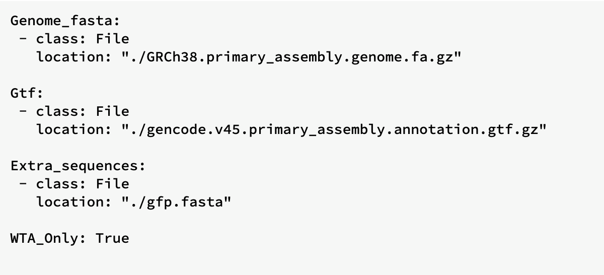
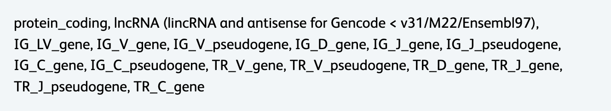

Extra Utilities for local Installation Version (Docker/Docker-free)
These utilities can be run in the same way as the main Rhapsody™ Sequence Analysis Pipeline.
The same Docker Image will be used to run these extra utlities.
The input will be using .yml file or on a command line
CWL documents for these utilities are in the "Extra Utilities" folder in main pipeline CWL (versioned folders). Please navigate to the folder here.
Below are the extra utilities available:
Make BD Rhapsody™ Reference: Create a new WTA or WTA_ATAC Reference Archive for use as an input to the BD Rhapsody™ Sequence Analysis Pipeline.
PhiX Contamination Detection: Check a FASTQ file for PhiX contamination, by aligning the reads to the PhiX genome. (uses Bowtie2)
Cell Label and UMI only: Given pairs of R1/R2 FASTQ files from BD Rhapsody™ libraries, only annotate the cell label and UMI of R1 and put it in the header of R2.
Pipeline Bundle (Docker-free):Define the yml file and run the command line below.
./rhapsody makeRhapReference inputs.yml
The example of the pipeline bundle yml file for Make BD Rhapsody™ Reference:

Input Parameters:
(Required) Genome_fasta: file_path
(Required) Gtf: file_path
Requires the 'gene_name' or 'gene_id' attribute to be set on each gene and exon feature.
Gene and exon feature lines must have the same attribute, and exons must have a corresponding gene with the same value.
For TCR/BCR assays, the TCR or BCR gene segments must have the 'gene_type' or 'gene_biotype' attribute set, and the value should begin with 'TR' or 'IG', respectively.
(Optional) WTA_Only:[True/False]> The pipeline will generate reference for ATAC and WTA reference by default, where a BWA-mem2 index created alongside the STAR index (WTA indexed reference). If only WTA reference is needed, set the WTA_Only to True.
(Optional) Extra_sequences:file_path additional sequences in FASTA format to use when building the STAR index. (e.g. transgenes or CRISPR guide barcodes). GTF lines for these sequences will be automatically generated and combined with the main GTF.
(Optional) Filtering_off:[True/False]
By default the input GTF files are filtered based on the gene_type/gene_biotype attribute.
If you have already pre-filtered the input Annotation files (Using biotypes defined by Gencode/Ensembl) and/or wish to turn-off the filtering, please set this option to True.
The GTF features having the following attribute values are are kept:

(Optional) Archive_prefix:String> A prefix base name for the result compressed archive file. The default value is constructed based on the input reference files.
(Optional) Maximum_threads:Integer The maximum number of threads to use. By default, all available cores are used.
(Optional) Extra_STAR_params: String
Parameters to pass directly to the STAR genomeGenerate process.
Useful for very large or very small genome sizes. Example: